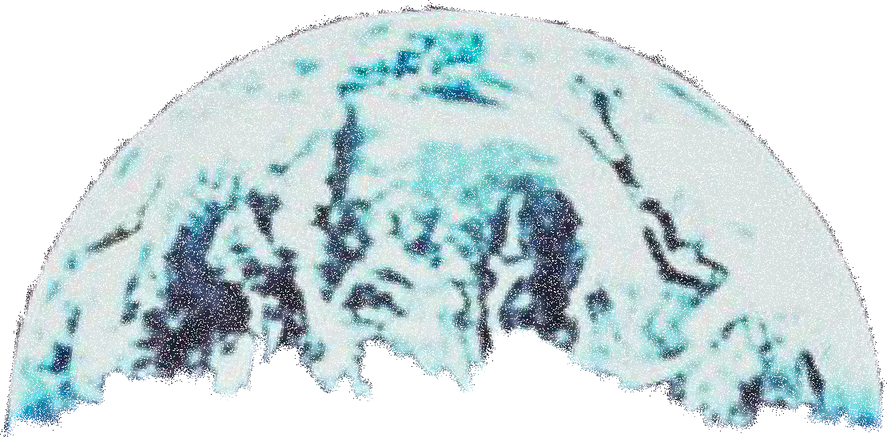

Slaughterhouse Five
The train had arrived on a siding by a prison which was originally constructed as an extermination camp for Russian prisoners of war.
The guards peeked inside Billy's car owlishly, cooed calmingly. They had never dealt with Americans before, but they surely understood this general sort of freight. They knew that it was essentially a liquid which could be induced to flow slowly toward cooing and light. It was nighttime.
The only light outside came from a single bulb which hung from a pole-high and far away. All was quiet outside, except for the guards, who cooed like doves. And the liquid began to flow. Gobs of it built up in the doorway, plopped to the ground.
Billy was the next-to-last human being to reach the door. The hobo was the last. The hobo could not flow, could not plop. He wasn't liquid any more. He was stone. So it goes.
Billy didn't want to drop from the car to the ground. He sincerely believed that he would shatter like glass. So the guards helped him down, cooing still. They set him down facing the train. It was such a dinky train now.
There was a locomotive, a tender, and three little boxcars. The last boxcar was the railroad guards' heaven on wheels. Again--in that heaven on wheels--the table was set. Dinner was served.
At the base of the pole from which the light bulb hung were three seeming haystacks. The Americans were wheedled and teased over to those three stacks, which weren't hay after all. They were overcoats taken from prisoners who were dead. So it goes.
It was the guards' firmly expressed wish that every American without an overcoat should take one. The coats were cemented together with ice, so the guards used their bayonets as ice picks, pricking free collars and hems and sleeves and so on, then peeling off coats and handing them out at random. The coats were stiff and dome-shaped, having conformed to their piles.
The coat that Billy Pilgrim got had been crumpled and frozen in such a way, and was so small, that it appeared to be not a coat but a sort of large black, three-cornered hat. There were gummy stains on it, too, like crankcase drainings or old strawberry jam. There seemed to be a dead, furry animal frozen to it. The animal was in fact the coat's fur collar.
Billy glanced dully at the coats of his neighbors. Their coats all had brass buttons or tinsel or piping or numbers or stripes or eagles or moons or stars dangling from them. They were soldiers' coats. Billy was the only one who had a coat from a dead civilian. So it goes.
And Billy and the rest were encouraged to shuffle around their dinky train and into the prison camp. There wasn't anything warm or lively to attract them-merely long, low, narrow sheds by the thousands, with no lights inside.
Somewhere a dog barked. With the help of fear and echoes and winter silences, that dog had a voice like a big bronze gong.
Billy and the rest were wooed through gate after gate, and Billy saw his first Russian. The man was all alone in the night-a ragbag with a round, flat face that glowed like a radium dial.
Billy passed within a yard of him. There was barbed wire between them. The Russian did not wave or speak, but he looked directly into Billy's soul with sweet hopefulness, as though Billy might have good news for him-news he might be too stupid to understand, but good news all the same.
Billy blacked out as he walked through gate after gate. He came to what he thought might be a building on Tralfamadore. It was shrilly lit and lined with white tiles. It was on Earth, though. It was a delousing station through which all new prisoners had to pass.
Billy did as he was told, took off his clothes. That was the first thing they told him to do on Tralfamadore, too. 